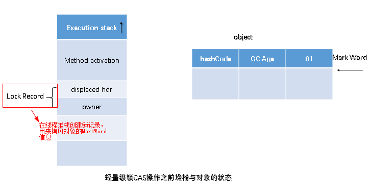
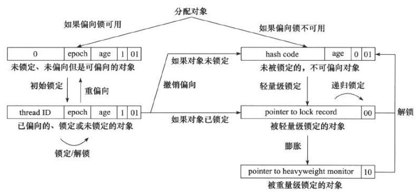
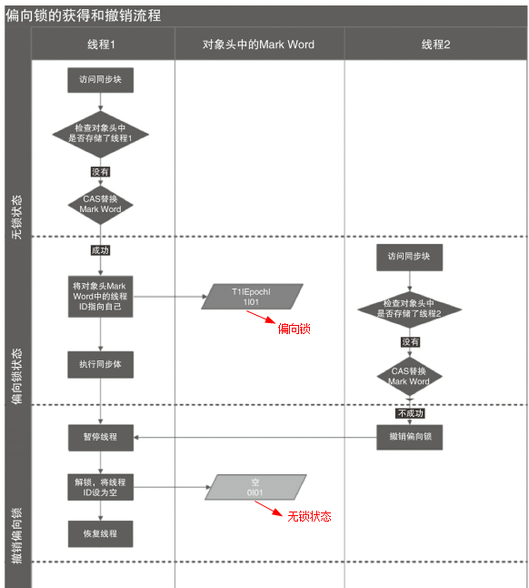

synchronized

Synchronized的使用
在应用Sychronized关键字时需要把握如下注意点：
- 一把锁只能同时被一个线程获取，没有获得锁的线程只能等待；
- 每个实例都对应有自己的一把锁（this）,不同实例之间互不影响；例外：锁对象是 *.class 以及 synchronized 修饰的是 static 方法的时候，所有对象公用同一把锁
- synchronized 修饰的方法，无论方法正常执行完毕还是抛出异常，都会释放锁
对象锁
包括方法锁（默认锁对象为 this,当前实例对象）和同步代码块锁（自己指定锁对象）。
代码块形式：手动指定锁定对象，也可是是this,也可以是自定义的锁
- 示例1
1 | public class SynchronizedObjectLock implements Runnable { |
输出结果：
1 | 我是线程Thread-0 |
- 示例2
1 | public class SynchronizedObjectLock implements Runnable { |
输出结果：
1 | block1锁,我是线程Thread-0 |
方法锁形式：synchronized修饰普通方法，锁对象默认为this
1 | public class SynchronizedObjectLock implements Runnable { |
输出结果：
1 | 我是线程Thread-0 |
类锁
指synchronize修饰静态的方法或指定锁对象为Class对象
synchronize修饰静态方法
- 示例1
1 | public class SynchronizedObjectLock implements Runnable { |
输出结果：
1 | 我是线程Thread-0 |
- 示例2
1 | public class SynchronizedObjectLock implements Runnable { |
输出结果：
1 | 我是线程Thread-0 |
synchronized指定锁对象为Class对象
1 | public class SynchronizedObjectLock implements Runnable { |
输出结果：
1 | 我是线程Thread-0 |
Synchronized原理分析
加锁和释放锁的原理
深入JVM看字节码，创建如下的代码：
1 | public class SynchronizedDemo2 { |
使用javac命令进行编译生成.class文件
1 | >javac SynchronizedDemo2.java |
使用javap命令反编译查看.class文件的信息
1 | >javap -v SynchronizedDemo2.class |
得到如下的信息：
关注红色方框里的 monitorenter 和 monitorexit 即可。
Monitorenter 和 Monitorexit 指令，会让对象在执行，使其锁计数器加 1 或者减 1。每一个对象在同一时间只与一个 monitor (锁)相关联，而一个 monitor 在同一时间只能被一个线程获得，一个对象在尝试获得与这个对象相关联的Monitor 锁的所有权的时候，monitorenter 指令会发生如下3中情况之一：
- monitor 计数器为 0，意味着目前还没有被获得，那这个线程就会立刻获得然后把锁计数器 + 1，一旦 + 1，别的线程再想获取，就需要等待。
- 如果这个 monitor 已经拿到了这个锁的所有权，又重入了这把锁，那锁计数器就会累加，变成 2，并且随着重入的次数，会一直累加。
- 这把锁已经被别的线程获取了，等待锁释放。
monitorexit 指令：释放对于 monitor 的所有权，释放过程很简单，就是将 monitor 的计数器减 1，如果减完以后，计数器不是 0，则代表刚才是重入进来的，当前线程还继续持有这把锁的所有权，如果计数器变成 0，则代表当前线程不再拥有该 monitor 的所有权，即释放锁。
下图表现了对象，对象监视器，同步队列以及执行线程状态之间的关系：
该图可以看出，任意线程对 Object 的访问，首先要获得 Object 的监视器，如果获取失败，该线程就进入同步状态，线程状态变为 BLOCKED，当 Object 的监视器占有者释放后，在同步队列中得线程就会有机会重新获取该监视器。
可重入原理：加锁次数计数器
上面的 demo 中在执行完同步代码块之后紧接着再会去执行一个静态同步方法，而这个方法锁的对象依然就这个类对象，那么这个正在执行的线程还需要获取该锁吗? 答案是不必的，从上图中就可以看出来，执行静态同步方法的时候就只有一条 monitorexit 指令，并没有 monitorenter 获取锁的指令。这就是锁的重入性，即在同一锁程中，线程不需要再次获取同一把锁。
Synchronized 先天具有重入性。每个对象拥有一个计数器，当线程获取该对象锁后，计数器就会加一，释放锁后就会将计数器减一。
保证可见性的原理：内存模型和happens-before规则
Synchronized 的 happens-before 规则，即监视器锁规则：对同一个监视器的解锁，happens-before 于对该监视器的加锁。继续来看代码：
1 | public class MonitorDemo { |
该代码的happens-before关系如图所示：
在图中每一个箭头连接的两个节点就代表之间的 happens-before 关系，黑色的是通过程序顺序规则推导出来，红色的为监视器锁规则推导而出：线程 A 释放锁 happens-before 线程 B 加锁，蓝色的则是通过程序顺序规则和监视器锁规则以及传递性规则推测出来 happens-befor 关系。现在我们来重点关注 2 happens-before 5，通过这个关系我们可以得出什么?
根据 happens-before 的定义中的一条:如果 A happens-before B，则 A 的执行结果对 B 可见，并且 A 的执行顺序先于 B。线程 A 先对共享变量 A 进行加一，由 2 happens-before 5 关系可知线程 A 的执行结果对线程 B 可见即线程 B 所读取到的 a 的值为 1。
JVM中锁的优化
简单来说在 JVM 中 monitorenter 和 monitorexit 字节码依赖于底层的操作系统的 Mutex Lock 来实现的，但是由于使用 Mutex Lock 需要将当前线程挂起并从用户态切换到内核态来执行，这种切换的代价是非常昂贵的；然而在现实中的大部分情况下，同步方法是运行在单线程环境（无锁竞争环境）如果每次都调用 Mutex Lock 那么将严重的影响程序的性能。不过在 jdk1.6 中对锁的实现引入了大量的优化，如锁粗化（Lock Coarsening）、锁消除（Lock Elimination）、轻量级锁（Lightweight Locking）、偏向锁（Biased Locking）、适应性自旋（Adaptive Spinning）等技术来减少锁操作的开销。
锁粗化（Lock Coarsening）：也就是减少不必要的紧连在一起的 unlock，lock 操作，将多个连续的锁扩展成一个范围更大的锁。
锁消（Lock Elimination）：通过运行时 JIT 编译器的逃逸分析来消除一些没有在当前同步块以外被其他线程共享的数据的锁保护，通过逃逸分析也可以在线程本地 Stack 上进行对象空间的分配（同时还可以减少 Heap 上的垃圾收集开销）。
- 轻量级锁（Lightweight Locking）：这种锁实现的背后基于这样一种假设，即在真实的情况下我们程序中的大部分同步代码一般都处于无锁竞争状态（即单线程执行环境），在无锁竞争的情况下完全可以避免调用操作系统层面的重量级互斥锁，取而代之的是在 monitorenter 和 monitorexit 中只需要依靠一条 CAS 原子指令就可以完成锁的获取及释放。当存在锁竞争的情况下，执行CAS指令失败的线程将调用操作系统互斥锁进入到阻塞状态，当锁被释放的时候被唤醒（具体处理步骤下面详细讨论）。
- 偏向锁（Biased Locking）：是为了在无锁竞争的情况下避免在锁获取过程中执行不必要的 CAS 原子指令，因为 CAS 原子指令虽然相对于重量级锁来说开销比较小但还是存在非常可观的本地延迟。
- 适应性自旋（Adaptive Spinning）：当线程在获取轻量级锁的过程中执行 CAS 操作失败时，在进入与 monitor 相关联的操作系统重量级锁（mutex semaphore）前会进入忙等待（Spinning）然后再次尝试，当尝试一定的次数后如果仍然没有成功则调用与该 monitor 关联的 semaphore （即互斥锁）进入到阻塞状态。
锁的类型
在 Java SE 1.6 里 Synchronied 同步锁，一共有四种状态：无锁、偏向锁、轻量级所、重量级锁，它会随着竞争情况逐渐升级。锁可以升级但是不可以降级，目的是为了提供获取锁和释放锁的效率。
锁膨胀方向： 无锁 → 偏向锁 → 轻量级锁 → 重量级锁（此过程是不可逆的）
自旋锁与自适应自旋锁
自旋锁
引入背景：大家都知道，在没有加入锁优化时，Synchronized 是一个非常“胖大”的家伙。在多线程竞争锁时，当一个线程获取锁时，它会阻塞所有正在竞争的线程，这样对性能带来了极大的影响。在挂起线程和恢复线程的操作都需要转入内核态中完成，这些操作对系统的并发性能带来了很大的压力。同时 HotSpot 团队注意到在很多情况下，共享数据的锁定状态只会持续很短的一段时间，为了这段时间去挂起和回复阻塞线程并不值得。在如今多处理器环境下，完全可以让另一个没有获取到锁的线程在门外等待一会（自旋），但不放弃 CPU 的执行时间。等待持有锁的线程是否很快就会释放锁。为了让线程等待，我们只需要让线程执行一个忙循环（自旋），这便是自旋锁由来的原因。
自旋锁早在 JDK1.4 中就引入了，只是当时默认时关闭的。在 JDK 1.6 后默认为开启状态。自旋锁本质上与阻塞并不相同，先不考虑其对多处理器的要求，如果锁占用的时间非常的短，那么自旋锁的新能会非常的好，相反，其会带来更多的性能开销（因为在线程自旋时，始终会占用 CPU 的时间片，如果锁占用的时间太长，那么自旋的线程会白白消耗掉 CPU 资源）。因此自旋等待的时间必须要有一定的限度，如果自选超过了限定的次数仍然没有成功获取到锁，就应该使用传统的方式去挂起线程了，在 JDK 定义中，自旋锁默认的自旋次数为 10 次，用户可以使用参数 -XX:PreBlockSpin 来更改。
可是现在又出现了一个问题：如果线程锁在线程自旋刚结束就释放掉了锁，那么是不是有点得不偿失。所以这时候我们需要更加聪明的锁来实现更加灵活的自旋。来提高并发的性能。（这里则需要自适应自旋锁！）
自适应自旋锁
在 JDK 1.6 中引入了自适应自旋锁。这就意味着自旋的时间不再固定了，而是由前一次在同一个锁上的自旋时间及锁的拥有者的状态来决定的。如果在同一个锁对象上，自旋等待刚刚成功获取过锁，并且持有锁的线程正在运行中，那么 JVM 会认为该锁自旋获取到锁的可能性很大，会自动增加等待时间。比如增加到 100 次循环。相反，如果对于某个锁，自旋很少成功获取锁。那再以后要获取这个锁时将可能省略掉自旋过程，以避免浪费处理器资源。有了自适应自旋，JVM对程序的锁的状态预测会越来越准备，JVM也会越来越聪明。
锁消除
锁消除时指虚拟机即时编译器再运行时，对一些代码上要求同步，但是被检测到不可能存在共享数据竞争的锁进行消除。锁消除的主要判定依据来源于逃逸分析的数据支持。意思就是：JVM 会判断再一段程序中的同步明显不会逃逸出去从而被其他线程访问到，那 JVM 就把它们当作栈上数据对待，认为这些数据时线程独有的，不需要加同步。此时就会进行锁消除。
当然在实际开发中，我们很清楚的知道那些地方时线程独有的，不需要加同步锁，但是在 Java API 中有很多方法都是加了同步的，那么此时 JVM 会判断这段代码是否需要加锁。如果数据并不会逃逸，则会进行锁消除。比如如下操作：在操作 String 类型数据时，由于 String 是一个不可变类，对字符串的连接操作总是通过生成的新的 String 对象来进行的。因此 Javac 编译器会对 String 连接做自动优化。在 JDK 1.5 之前会使用 StringBuffer 对象的连续 append() 操作，在 JDK 1.5 及以后的版本中，会转化为 StringBuidler 对象的连续 append() 操作。
众所周知，StringBuilder 不是安全同步的，但是在上述代码中， JVM 判断该段代码并不会逃逸，则将该代码带默认为线程独有的资源，并不需要同步，所以执行了锁消除操作。(还有 Vector 中的各种操作也可实现锁消除。在没有逃逸出数据安全防卫内)
锁粗化
原则上，我们都知道在加同步锁时，尽可能的将同步块的作用范围限制到尽量小的范围(只在共享数据的实际作用域中才进行同步，这样是为了使得需要同步的操作数量尽可能变小。在存在锁同步竞争中，也可以使得等待锁的线程尽早的拿到锁)。
大部分上述情况是完美正确的，但是如果存在连串的一系列操作都对同一个对象反复加锁和解锁，甚至加锁操作时出现在循环体中的，那即使没有线程竞争，频繁地进行互斥同步操作也会导致不必要地性能操作。
1 | public static String test04(String s1, String s2, String s3) { |
在上述地连续 append() 操作中就属于这类情况。JVM 会检测到这样一连串地操作都是对同一个对象加锁，那么 JVM 会将加锁同步地范围扩展（粗化）到整个一系列操作的 外部，使整个一连串地 append() 操作只需要加锁一次就可以了。
轻量级锁
在 JDK 1.6 之后引入的轻量级锁，需要注意的是轻量级锁并不是替代重量级锁的，而是对在大多数情况下同步块并不会有竞争出现提出的一种优化。它可以减少重量级锁对线程的阻塞带来地线程开销。从而提高并发性能。
如果要理解轻量级锁，那么必须先要了解 HotSpot 虚拟机中对象头地内存布局。上面介绍 Java 对象头也详细介绍过。在对象头中（Object Header）存在两部分。第一部分用于存储对象自身的运行时数据，HashCode、GC Age、锁标记位、是否为偏向锁等。一般为32位或者64位（视操作系统位数定）。官方称之为 Mark Word，它是实现轻量级锁和偏向锁的关键。 另外一部分存储的是指向方法区对象类型数据的指针（Klass Point），如果对象是数组的话，还会有一个额外的部分用于存储数据的长度。
轻量级锁加锁
在线程执行同步块之前，JVM 会先在当前线程的栈帧中创建一个名为锁记录（Lock Record）的空间，用于存储锁对象目前的 Mark Word 的拷贝（JVM 会将对象头中的 Mark Word 拷贝到锁记录中，官方称为 Displaced Mark Ward ）这个时候线程堆栈与对象头的状态如图：

如上图所示：如果当前对象没有被锁定，那么锁标志位位 01 状态，JVM 在执行当前线程时，首先会在当前线程栈帧中创建锁记录 Lock Record 的空间用于存储锁对象目前的 Mark Word 的拷贝。
然后，虚拟机使用 CAS 操作将标记字段 Mark Word 拷贝到锁记录中，并且将 Mark Word 更新为指向 Lock Record 的指针。如果更新成功了，那么这个线程就有用了该对象的锁，并且对象 Mark Word 的锁标志位更新为（Mark Word 中最后的 2 bit）00，即表示此对象处于轻量级锁定状态，如图：

如果这个更新操作失败，JVM 会检查当前的 Mark Word 中是否存在指向当前线程的栈帧的指针，如果有，说明该锁已经被获取，可以直接调用。如果没有，则说明该锁被其他线程抢占了，如果有两条以上的线程竞争同一个锁，那轻量级锁就不再有效，直接膨胀位重量级锁，没有获得锁的线程会被阻塞。此时，锁的标志位为 10.Mark Word 中存储的时指向重量级锁的指针。
轻量级解锁时，会使用原子的 CAS 操作将 Displaced Mark Word 替换回到对象头中，如果成功，则表示没有发生竞争关系。如果失败，表示当前锁存在竞争关系。锁就会膨胀成重量级锁。两个线程同时争夺锁，导致锁膨胀的流程图如下：

偏向锁
引入背景：在大多实际环境下，锁不仅不存在多线程竞争，而且总是由同一个线程多次获取，那么在同一个线程反复获取所释放锁中，其中并还没有锁的竞争，那么这样看上去，多次的获取锁和释放锁带来了很多不必要的性能开销和上下文切换。
为了解决这一问题，HotSpot 的作者在 Java SE 1.6 中对 Synchronized 进行了优化，引入了偏向锁。当一个线程访问同步快并获取锁时，会在对象头和栈帧中的锁记录里存储锁偏向的线程 ID，以后该线程在进入和推出同步块时不需要进行 CAS 操作来加锁和解锁。只需要简单地测试一下对象头的 Mark Word 里是否存储着指向当前线程的偏向锁。如果成功，表示线程已经获取到了锁。

偏向锁的撤销
偏向锁使用了一种等待竞争出现才会释放锁的机制。所以当其他线程尝试获取偏向锁时，持有偏向锁的线程才会释放锁。但是偏向锁的撤销需要等到全局安全点（就是当前线程没有正在执行的字节码）。它会首先暂停拥有偏向锁的线程，然后检查持有偏向锁的线程是否活着。如果线程不处于活动状态，直接将对象头设置为无锁状态。如果线程活着，JVM 会遍历栈帧中的锁记录，栈帧中的锁记录和对象头要么偏向于其他线程，要么恢复到无锁状态或者标记对象不适合作为偏向锁。

著作权归https://pdai.tech所有。 链接：https://www.pdai.tech/md/java/thread/java-thread-x-key-synchronized.html
锁的优缺点对比
| 锁 | 优点 | 缺点 | 使用场景 |
|---|---|---|---|
| 偏向锁 | 加锁和解锁不需要 CAS 操作，没有额外的性能消耗，和执行非同步方法相比仅存在纳秒级的差距 | 如果线程间存在锁竞争，会带来额外的锁撤销的消耗 | 适用于只有一个线程访问同步快的场景 |
| 轻量级锁 | 竞争的线程不会阻塞，提高了响应速度 | 如线程成始终得不到锁竞争的线程，使用自旋会消耗CPU性能 | 追求响应时间，同步快执行速度非常快 |
| 重量级锁 | 线程竞争不使用自旋，不会消耗CPU | 线程阻塞，响应时间缓慢，在多线程下，频繁的获取释放锁，会带来巨大的性能消耗 | 追求吞吐量，同步快执行速度较长 |
Synchronized与Lock
synchronized的缺陷
效率低：锁的释放情况少，只有代码执行完毕或者异常结束才会释放锁；试图获取锁的时候不能设定超时，不能中断一个正在使用锁的线程，相对而言，Lock 可以中断和设置超时。不够灵活：加锁和释放的时机单一，每个锁仅有一个单一的条件（某个对象），相对而言，读写锁更加灵活。无法知道是否成功获得锁，相对而言，Lock可以拿到状态，如果成功获取锁，….，如果获取失败，…..。
Lock解决相应问题
Lock 类这里不做过多解释，主要看里面的4个方法:
lock(): 加锁unlock(): 解锁tryLock(): 尝试获取锁，返回一个boolean值tryLock(long,TimeUtil): 尝试获取锁，可以设置超时
Synchronized 只有锁只与一个条件（是否获取锁）相关联，不灵活，后来 Condition 与 Lock 的结合 解决了这个问题。
多线程竞争一个锁时，其余未得到锁的线程只能不停的尝试获得锁，而不能中断。高并发的情况下会导致性能下降。ReentrantLock 的lockInterruptibly() 方法可以优先考虑响应中断。 一个线程等待时间过长，它可以中断自己，然后 ReentrantLock 响应这个中断，不再让这个线程继续等待。有了这个机制，使用 ReentrantLock 时就不会像 synchronized 那样产生死锁了。
ReentrantLock为常用类，它是一个可重入的互斥锁 Lock，它具有与使用 synchronized 方法和语句所访问的隐式监视器锁相同的一些基本行为和语义，但功能更强大。
再深入理解
synchronized 是通过软件（JVM）实现的，简单易用，即使在 JDK5 之后有了 Lock，仍然被广泛地使用。
- 使用 Synchronized 有哪些要注意的？
- 锁对象不能为空，因为锁的信息都保存在对象头里。
- 作用域不宜过大，影响程序执行的速度，控制范围过大，编写代码也容易出错。
- 避免死锁。
- 在能选择的情况下，既不要用 Lock 也不要用 synchronized 关键字，用 java.util.concurrent 包中的各种各样的类，如果不用该包下的类，在满足业务的情况下，可以使用 synchronized 关键，因为代码量少，避免出错。
- synchronized 是公平锁吗？
synchronized 实际上是非公平的，新来的线程有可能立即获得监视器，而在等待区中等候已久的线程可能再次等待。